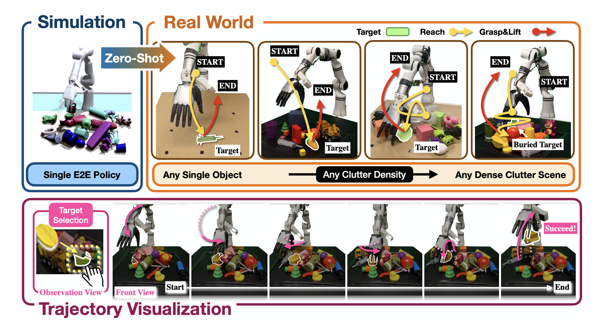

|
Jinzhou Li I'm an incoming Robotics Ph.D. student at Duke University. Currently, I'm a Visiting Research Student at the Center on Frontiers of Computing Studies (CFCS) in the School of Computer Science at Peking University, supervised by Prof. Hao Dong. Previously, I received my Master's degree from Cornell University, where I was advised by Prof. Maha Haji and work closely with Prof. Daniel Hastings. Prior to this, I studied Computer Science at the University of Vermont. |

jinzhou.li [at] duke [dot] edu |
PublicationsMy research focuses on enabling robots to achieve human-level dexterity in complex environments. I work on bridging the gap between human and robotic capabilities through dexterous manipulation, tactile sensing, and machine learning approaches. * Equal Contribution |

|
TwinAligner: Visual and Physical Real2Sim2Real
All-in-one for Robotic Manipulation
Hongwei Fan*, Hang Dai*, Jiyao Zhang*, Jinzhou Li, Qiyang Yan, Yujie Zhao, Yuxuan Lai, Hao Tang, Hao Dong Preprint, 2025 website A novel Real2Sim2Real system addressing both visual and physics gaps. |
|

|
ClutterDexGrasp: A Sim-to-Real System for General Dexterous Target Grasping in
Cluttered Scenes
Zeyuan Chen*, Qiyang Yan*, Yuanpei Chen*, Tianhao Wu, Jiyao Zhang, Zihan Ding, Jinzhou Li, Yaodong Yang, Hao Dong Preprint, 2025 website We propose the first close-loop sim-to-real system for general dexterous grasping in cluttered scenes. |

|
Adaptive Visual-Tactile Fusion with Predictive Force Attention for Dexterous Manipulation
Jinzhou Li*, Tianhao Wu*, Jiyao Zhang**, Zeyuan Chen**, Haotian Jin, Mingdong Wu, Yujun Shen, Yaodong Yang, Hao Dong Preprint, 2025 arXiv, website, code A future force-guided attention fusion module that adaptively adjusts the weights of visual and tactile features. |

|
SimLauncher: Launching Sample-Efficient Real-world Robotic Reinforcement Learning via Simulation Pre-training
Mingdong Wu*, Lehong Wu*, Yizhuo Wu*, Weiyao Huang, Hongwei Fan, Zheyuan Hu, Haoran Geng, Jinzhou Li, Jiahe Ying, Long Yang, Yuanpei Chen, Hao Dong Preprint, 2025 arXiv, website We combine the strengths of real-world RL and real-to-sim-to-real approaches to accelerate policy learning. |

|
Canonical Representation and Force-Based Pretraining of 3D Tactile for Dexterous Visuo-Tactile Policy Learning
Tianhao Wu, Jinzhou Li*, Jiyao Zhang*, Mingdong Wu, Hao Dong ICRA 2025 arXiv, website, code A novel 3D tactile data representation and force-based pretraining to enhance dexterous manipulation learning. |
Teaching
|
Professional Activities
|
|
Oct, 2024. Design and source code from Jon Barron's website. |